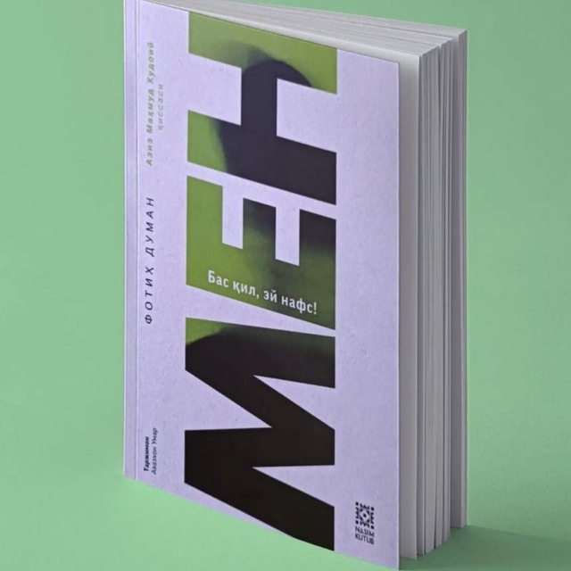

Bu qiziqarli kitoblar sahifasi

“Men. Bas qil, ey nafs!” — Fotih Duman muallifligidagi falsafiy‑psixologik roman bo‘lib, unda insonning ichki “Men”i — nafsu-havosi bilan kurashi, qalb pokligi sari yo‘li tasvirlanadi. Bosh qahramon — 25–30 yosh oralig‘idagi oddiy shahar yigitidir. U hayotidan, atrofidagi odamlarning yuzaki qarashlaridan charchab, o‘z o‘rnini, haqiqiy baxtni izlashga kirishadi. Bir kuni u – oliy ma’rifat egasi, donishmand Sufi ustoz – Salohiddin bilan tanishadi. Safar boshlandi. Salohiddin qahramonni dunyo lazzatlari ortida quvishdan to‘xtatadi, unga “nafs”ning yetti bosqichini koʻrsatishni va’da qiladi. Uchinchi bosqich (“Gʻazab zulmati”). Nafsning qattiq qarshiligi kuchayadi: ichki oʻzgarish istagi bor ekan, tashqi tazyiqlarga dosh berish qiyinlashadi. Oltinchi bosqich (“Mahabbat nuriga ochilish”). Ustoz bilan birga oʻtgan voqealar, suhbatlar va o‘ylash jarayonlari qahramonda boshqacha mehr‑sadoqat va hamdardlik uyg‘otadi. Yettinchi bosqich (“Qalb pokligi”). Protagonist dunyoviy g‘arazlardan ozod boʻlib, ichki osoyishtalik va Allohga boʻlgan chin dildan sadoqat holatiga yetadi. Romanning so‘ngida bosh qahramon nafsga qarshi safarbarligini davom ettirib, o‘z ichki tinchligi va qalb iffatini ushlab qolish uchun kundalik hayotda ham o‘zi bilan kurashishni davom ettirish zarurligini anglaydi.